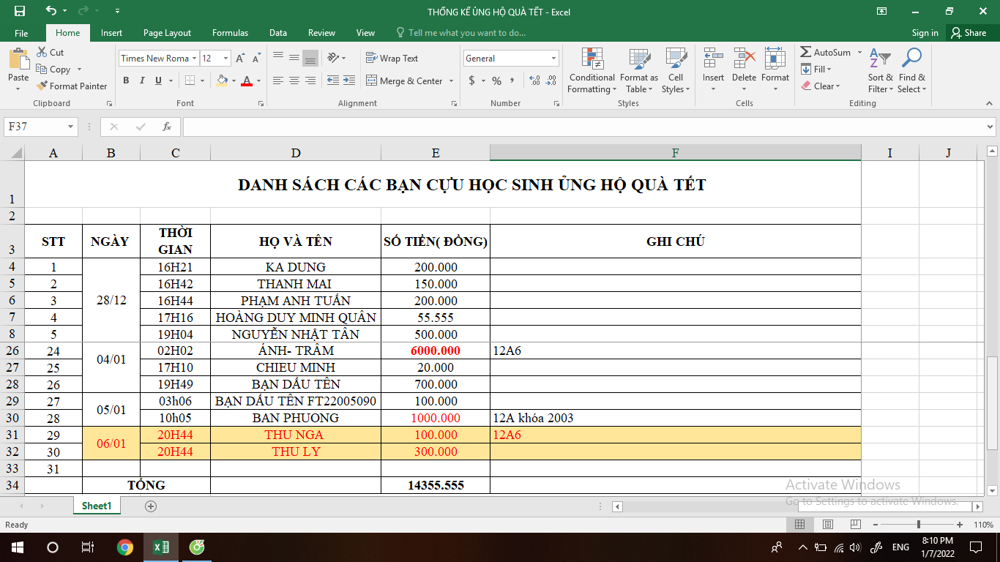

Tích tiểu thành đại
Thứ ba. 11/1/2022, 20.50 (GMT+7)
Thư Ngỏ: Kính gửi: Các bạn Cựu học sinh trường THPT Nguyễn Viết Xuân. Bánh xe thời gian đang xoay những vòng cuối cùng khép lại năm 2021, không khí xuân mới Nhâm Dần 2022 đang đến gần. Năm mới đến, mọi người hân hoan với bao niềm vui về gia đình và sự nghiệp, song bên cạnh đó vẫn còn bao cảnh đời kém may mắn đang mơ về một cái Tết đầm ấm hơn. Như thông lệ hằng năm, Đông về chúng tôi lại chuẩn bị chương trình tặng quà "Tết cho học sinh nghèo", nhằm phần nào chia sẻ những khó khăn, góp thêm niềm vui trong năm mới, tạo động lực phấn đấu trong học tập cho những học sinh có hoàn cảnh khó khăn đang theo học tại trường . Để chương trình thành công và ý nghĩa, chúng tôi mong chờ đón nhận sự ủng hộ từ những tấm lòng từ các bạn chung tay góp sức vì các em học sinh nghèo. Từ bây giờ, chúng tôi xin đón nhận mọi sự ủng hộ, đến hết ngày 10/01/2022. Dự kiến sẽ tổ chức trao quà cho các em trong buổi học cuối cùng trước khi các em nghỉ Tết. Mọi đóng góp của các bạn có thể nộp tại VP Đoàn trường hoặc qua STK ngân hàng Agribank :5408.215.02.08.91 (Nguyễn Ngọc Thạch) - Chúng tôi sẽ tổng hợp và niêm yết DS lên fanpage để các bạn theo dõi. Mọi ủng hộ về vật chất lẫn tinh thần của các bạn là sự khích lệ cho những người thực hiện, là nguồn động viên tinh thần và mang lại niềm vui to lớn lớn cho các em học sinh nghèo. Kính chúc mọi người năm mới hạnh phúc và thành công. Trân trọng cám ơn và kính chào! TM. BCH ĐOÀN TRƯỜNG BÍ THƯ Nguyễn Ngọc Thạch
Giới Thiệu
Mẹo giúp tăng tư duy đầu tư
Tìm hiểu thêm

LIÊN HỆ
Điện thoại: 0847899999
Email: huyasm@gmail.com
Hướng nghiệp
Tra cứu điểm